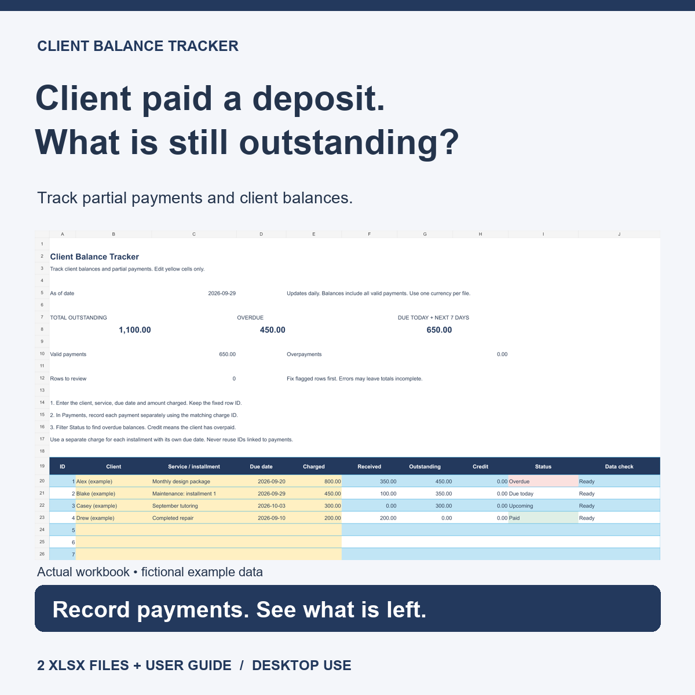
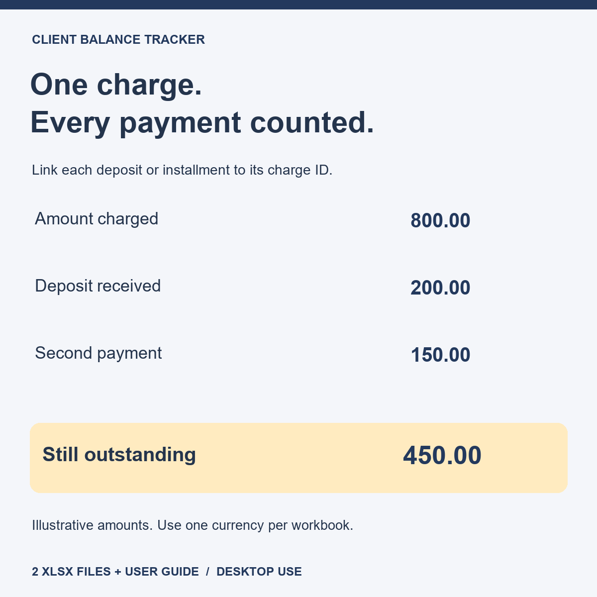

English edition · XLSX
Client Balance Tracker
A client pays a deposit, then another installment. See what is still outstanding without losing track of individual payments.
- 100 charges and 400 payment entries per workbook.
- Multiple payments linked to the same charge.
- Outstanding balances, overpayment credits and due-date statuses.
- Blank template, worked example and English user guide.
The English edition is prepared for marketplace submission and is not yet for sale. The linked listing sells Recebe Certo, the Portuguese edition.
See a partial-payment example
